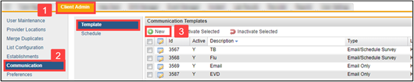
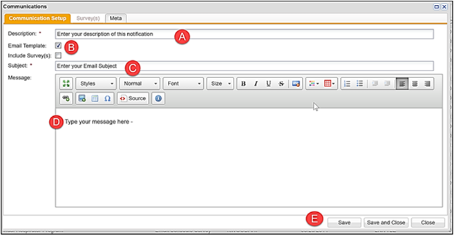
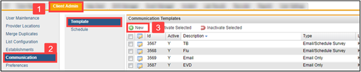
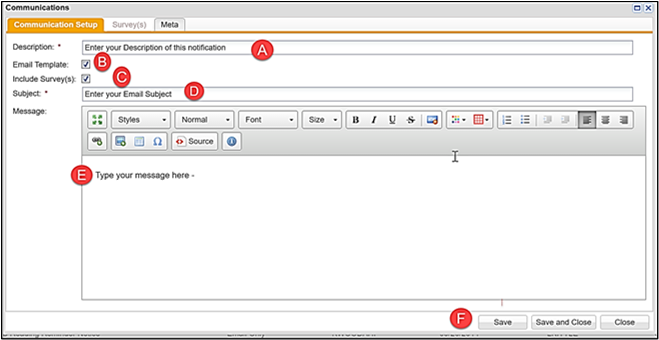
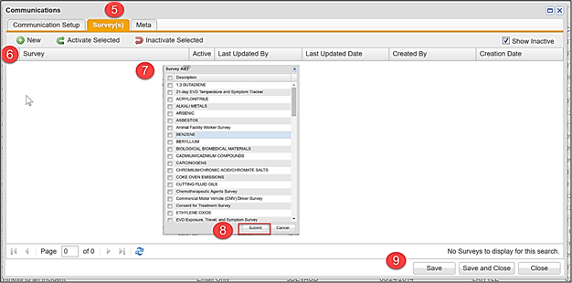
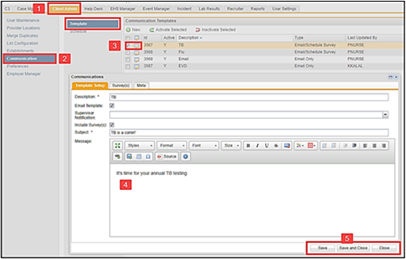

Notification Management enables ReadySet Client Administrators to easily create, edit and activate or deactivate notification templates that are used for Mass Emails (C3), Initialize Programs (C3), Correspondence (Participant Record). This feature includes the ability to change vaccination event dates, create notifications that activate surveys and create new email templates such as follow-up reminder notices.
Notification Management Options
Add/create new templates
Edit existing templates
Activate/deactivate templates
Add/create/edit templates that also activates surveys
Communication Setup Allows You to Create and Edit:
Email Notification Templates (locations available for use in C3/Mass Email, EHS Manager/Participant Management/Correspondence, Incident/Notifications)
Email Templates that Activate Surveys (locations available for use in C3/Initialize Programs)
Templates that Activate Surveys Only (location available for use in C3/Initialize Programs)
Adding a New Mass Email Notification
Click Client Admin tab.
Click Communication > Setup.
Click New.

Complete the setup:
Enter your Description of this notification.
Select the Email Template checkbox.
Enter your Subject line.
Type your Message (notification verbiage).
Click Save and Close.

Your notification is now complete and is ready to be used in your Mass Email Notification Type drop down.
Adding an Initialize Programs Notification Email
Click Client Admin tab.
Click Communication > Template.
Click New.

Complete the setup:
Enter your Description of this notification.
Select the Email Template checkbox.
Select the Include Survey(s) checkbox.
Enter your Subject line.
Type your Message (notification verbiage).
Click Save.

Survey(s) tab is now available.
Click New.
Select from the list of surveys available based on your program(s) for this process.
Click Submit.
Click Save and Close.

Your notification and surveys are now available in the C3 Initialize Programs/Notification Type drop down.
Editing an Existing Notification
Click Client Admin tab.
Click Communication > Template.
Click the Edit icon next to the notification you wish to edit.
Make edits as needed.
Click Save.

Activating/Deactivating Notifications
Select the checkbox next to the notification you wish to activate/deactivate.
Click the Activate or Inactivate Selected icons.
An inactivated notification will no longer display in any location (C3/ Mass Email, Initialize Programs or Correspondence) and cannot be used in any existing “Ready” email or initialize program notifications.
View inactivated notifications by selecting the checkbox next to Show Inactivein the upper right of the menu bar.
If you attempt to inactivate a notification that is used by an automated notification/reminder, you will receive an error message and need to contact ReadySetCustomer Support. If you inactivate a notification that is currently in C3 “Ready Status”, the notification will not be sent. You will need to go to the C3 “ready” notification and either delete or change to a new notification type.